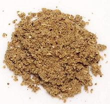

 |
Amchar MasalaTrinidad - Amchar Masala | ||||
| Makes: Effort: Sched: DoAhead: |
8 T ** 10 min Yes |
A Trinidad version of Indian Achar Masala, used particularly to make Mango Anchar Pickle, but also sprinkled on Indian style dishes at the end of cooking. See also Comments. | |||
|
|
1/4 1 1 1 1 2 |
c T t t t t |
Coriander Seed Cumin Seed Fennel Seed Mustard Seed Fenugreek Seed Peppercorns, blk |
Make: - (25 min)
|